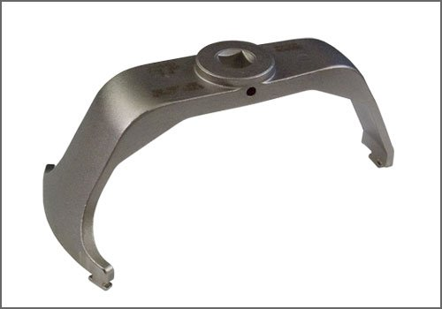

Operation CHARM
: Car repair manuals for everyone.
Home
>>
Cadillac
>>
2008
>>
SRX AWD V8-4.6L
>>
Repair and Diagnosis
>>
Powertrain Management
>>
Fuel Delivery and Air Induction
>>
Fuel Pump
>>
Tools and Equipment
Fuel Pump: Tools and Equipment

Fuel Pump
Lock Ring Tool
AST tool# J 45722
Fuel pump
lock ring tool that can be used on GM and Saab vehicles
2009 Suggested user price: Contact AST for pricing
Assenmacher Specialty Tools
1 800 525 2943